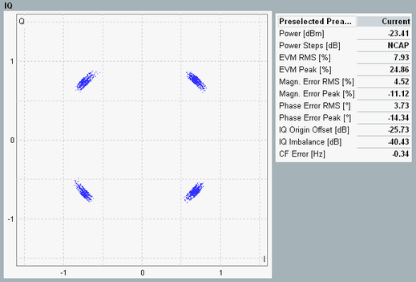

Detailed Views: I/Q Constellation Diagram
The constellation diagram shows the modulation symbols of the preselected preamble in the I/Q plane.

WCDMA PRACH: I/Q constellation diagram
All samples in the preamble are evaluated, excluding a 25 µs guard period at the beginning and end of the preamble. Thus 3904 points are displayed.
PRACH preambles are QPSK modulated, so that the points are grouped in four spots, ideally located on a circle around the origin, with relative phase angles of 90 deg.
See also: "I/Q Constellation Diagram"